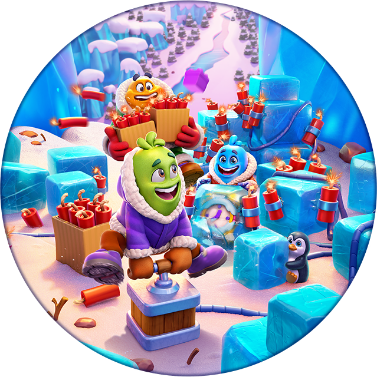

Ảnh sự kiện mới · 2026-10-13
42 ảnh chọn lọc · 12 tính năng. Game dựng giao diện thật trên LDPlayer từ fixture ép mở cục bộ; mỗi ảnh ghi trạng thái và giới hạn quan sát.
Mở thư viện ảnh và tình huống sự kiện →Phân tích sâu theo luồng và ví dụ
Đã đối chiếu cách trình bày của RoyalMatch: nhận định → tình huống xuyên suốt → nhánh xử lý → ảnh theo bước → đánh giá thiết kế. 54 case được mô tả trong 5 bài dưới đây; bao gồm cả case đọc mã và case đề xuất, không đồng nghĩa tất cả đã chạy. 12 ảnh demo mới được gắn đúng bước.
Cập nhật phân tích · 10/10/2026
Phân tích bản 1006, cấu hình runtime và kiểm thử LDPlayer: booster, Play On, phần thưởng và vòng đời màn chơi.

Block Out! – Game Design Document
Tài liệu thiết kế đọc ngược từ client Block Out! 1006 đang cài và mã decompile 1006 (14/09/2026): mọi tính năng, use case, cấu hình và bảng phần thưởng mà client chứa. Mỗi trang có infobox, mô tả, cách hoạt động, bảng thưởng, số liệu, use case chi tiết và cấu hình – kèm tên class/method làm bằng chứng.
Phân tích & đánh giá
Các bài phân tích, đánh giá riêng dựa trên GDD và dữ liệu đọc ngược (không phải mô tả tính năng).
Thiết kế chi tiết theo tính năng · 28/10/2026
Mỗi trang dưới đây có thêm mục Thiết kế chi tiết: luồng người chơi từng bước kèm ảnh chơi thật trên giả lập, quy tắc đọc từ code, config server live và gợi ý vận dụng cho game khác. Tải bảng tổng hợp: BlockOut_ThietKeChiTiet.xlsx.
 chìa ×1/×3/×5 theo độ khó · 8 bước · 11 ảnh
chìa ×1/×3/×5 theo độ khó · 8 bước · 11 ảnh 5 mạng, hồi 30 phút, coin khởi đầu 1.000 · 1 bước · 2 ảnh
5 mạng, hồi 30 phút, coin khởi đầu 1.000 · 1 bước · 2 ảnh